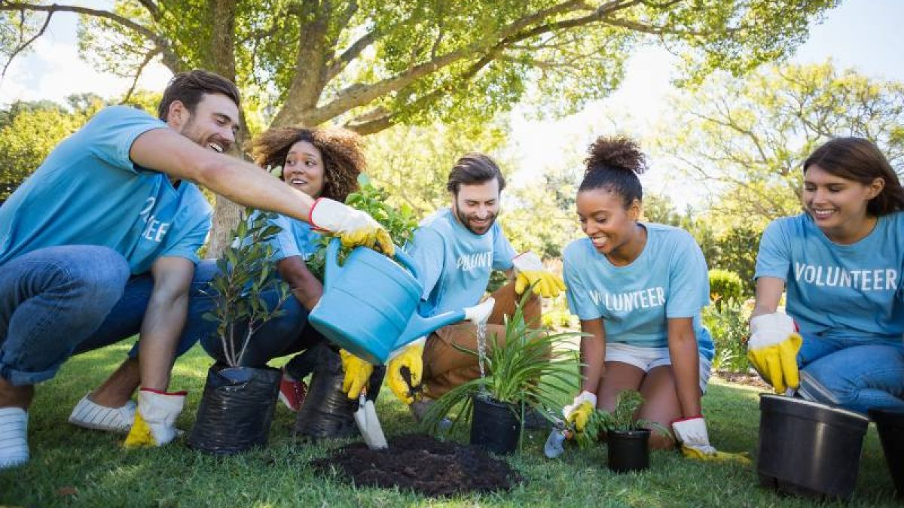

Ir a sección: Empresas | Ciudadanos | Certificaciones
Empresas
Las empresas pueden contribuir al cuidado del medio ambiente adoptando políticas sostenibles y respetando estándares ambientales:
- ASG
- Ambiental, Social y Gobernanza. Estrategia que integra sostenibilidad en la gestión de la empresa.
- Diseño sostenible
- Producción y ecodiseño que minimiza residuos y promueve la economía circular.
Certificaciones Sostenibles
| Certificación | Descripción |
|---|---|
| ISO 14001 | Gestión ambiental certificada para reducir impactos ecológicos. |
| EMAS | Sistema comunitario de gestión ambiental para organizaciones. |
| Fair Trade | Certificación de comercio justo y sostenible. |
"El futuro sostenible comienza con decisiones responsables de cada empresa y ciudadano."
Ayuntamiento de Múnich - Departamento de Medio Ambiente
Ciudadanos
Los ciudadanos pueden adoptar pequeñas acciones que suman un gran impacto en la sostenibilidad:
- Ahorrar agua y energía en el hogar
- Separar y reciclar residuos
- Usar transporte público, bicicleta o caminar
- Comprar productos locales y de temporada
- Participar en talleres y actividades ambientales
Además, se recomienda seguir los ODS (Objetivos de Desarrollo Sostenible) para reducir la huella de carbono individual.
